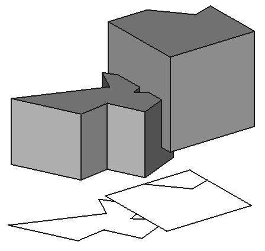

Draft Shape2DView
|
| Menü konumu
|
| Draft -> Shape 2D View
|
| Workbenches
|
| Draft, Arch
|
| Varsayılan kısayol
|
| Hiçbiri
|
| Ayrıca bkz
|
| Hiçbiri
|
|
Description
This tool places in the document a 2D object which is a flattened view of a selected Shape-based object, projected along the current view direction.

How to use
- Select the object you want to extract a 2D view from
- Rotate the view (or use the view presets shortcuts) so it reflects the direction you want to project the object to. For example, using a Top view will project the object on the XY plane, vertically along the Z axis like on the image above.
- Press the Draft Shape2DView button
Options
- If the selected object is an Arch SectionPlane, the 2D projection will be of the contents of the Section plane, and the projection vector will be taken from the section plane instead of the Projection property below.
- The normal operating mode is Solid, which projects the whole shape, but, if you selected some faces of the base object when creating the 2D view, you can also set the Individual Faces mode, which will project only the faces that were selected.
- If the selected object is an Arch SectionPlane, Cutlines and Cutfaces projection mode are also available, which project only the edges being cut by the section plane. Cutfaces mode displays the cut areas of solids as faces.
Properties
- DATAProjection: The direction of the projection.
- DATAProjection Mode: The mode of the projection: solid, individual faces, or cutlines.
- DATAIn Place: If this is True, when using Cutlines or Cutfaces mode (Arch SectionPlane only), the result will appear at the cut plane location instead of the ground plane available in version 0.17
- DATAHiddenLines: Shows hidden lines or not
- DATATessellation: Tessellate Ellipses and BSplines into line segments
- DATASegment Length: The size of segments if Tessellation is turned on
Scripting
The Draft Shape2DView tool can by used in macros and from the python console by using the following function:
makeShape2DView (object,[projection],[facenumbers])
- Adds a 2D shape to the document, which is a 2D projection of the given object.
- A specific projection vector can also be given.
- Returns the generated object.
- You can also provide a list of face numbers to be considered.
Example:
import FreeCAD,Draft
Draft.makeShape2DView(FreeCAD.ActiveDocument.ActiveObject)
{kind=link}
{kind=link}